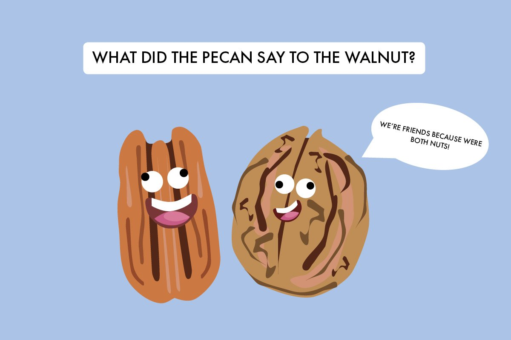

Jokes for Days
Home
(current)
Daily Joke
Jokes by Category
Submit a Joke
Welcome to Jokes for Days
Click the button below to see the joke of the day, or click about to browse different jokes
Daily Dose

Image courtesy of
tasteofhome.com